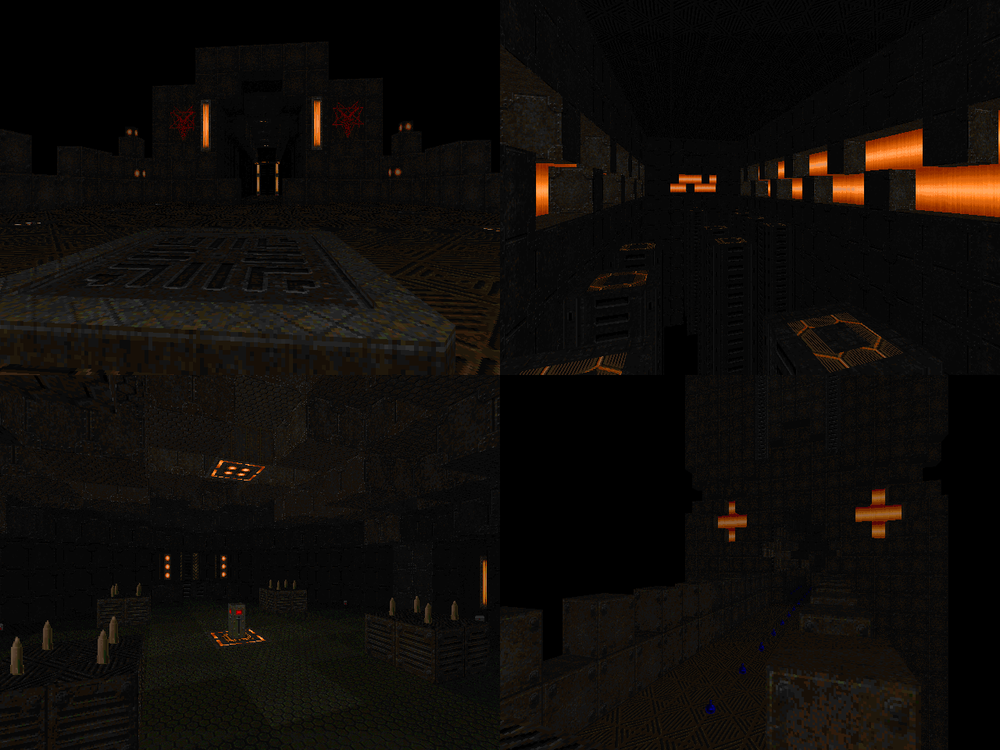

DOWNLOAD LINKS



| Year | 2023 |
| IWAD | doom2.wad |
| Source port | MBF21-compatible |
| Game mode(s) | Single-player |
| Map(s) contributed | MAP03, MAP09 |
| Other contributions | Graphics, project lead, UMAPINFO |
Devious Deviance is an 8-level MBF21 mapset that came to life as a community project hosted by Yours Truly. Running
between July and September of 2022, the project employed a gimmick where difficulty settings had to be implemented by means
other than changing monsters. That is to say, monster count and composition had to stay unchanged between all difficulties -
everything else was fair game. The end result, I dare say, is a selection of maps with some very creative choices taken as to
how the difficulty settings are implemented, where not only item pickups but sometimes even room layouts change.
My own map for the project, "Temple of Steel", occupies the MAP03 slot. A mixture of rusted metal and glowing orange, this
metallic behemoth houses a selection of challenges for the player to overcome. Upon entering its guts and clearing out the
initial batch of demons, the player gets one of three keycards and traverses through the challenges ahead in the order that
the keycards and their difficulty of choice dictate. The experience is accompanied by an original MIDI composition by none
other than myself. I also made MAP09, which is a small credits map with dioramas of the maps around the perimeter.
Being the project lead on Devious Deviance, obviously I was additionally in charge of overseeing the development process
and compiling the wad. I also made the graphics and wrote the UMAPINFO.